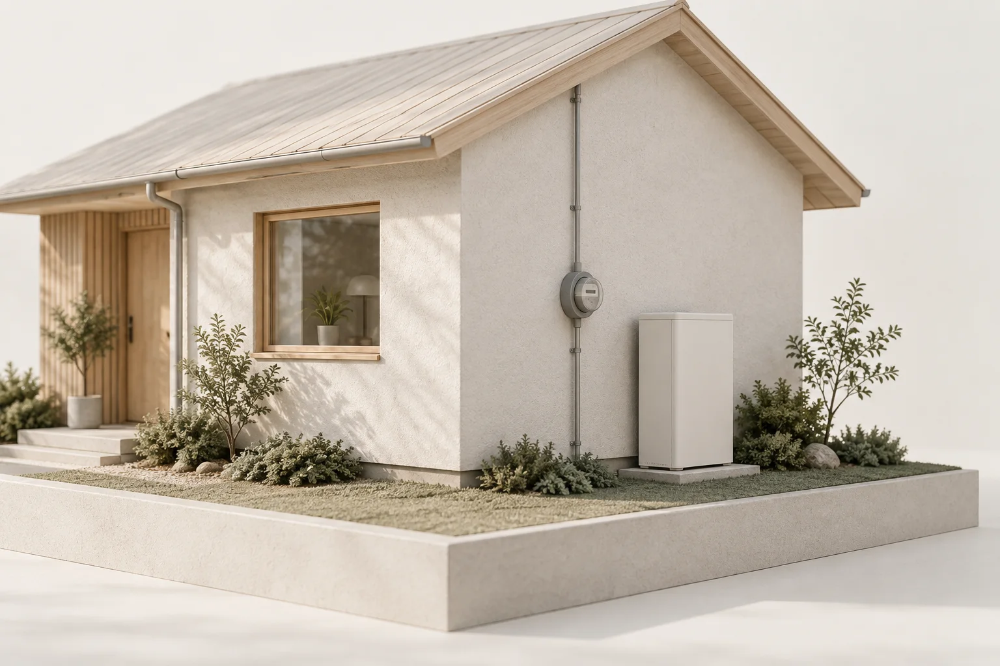

Camera viewSpatial viewReference distanceCandidate location
Illustrated walkthroughWalk slowly past the meter
Keep the wall and ground in view as you move.
A concept of the live experience.
An illustrated capture, not a camera feed. No images are collected.
A little less back and forth.
Separate photos can show the meter, the wall, or the ground. A shared view could help a reviewer understand how they fit together. That's the idea we're testing: a clearer starting point for a home battery survey.
From your phone to a useful survey.
The planned experience connects a guided iPhone scan to a model and a placement check. Each stage has a different job.
1. Walk the space.
Move slowly around the meter wall and a nearby corner. The phone should show which areas it has seen and guide you toward missing views of the ground and obstacles.
2. Bring it together.
Send selected photos with the phone's position and camera data. The server uses that evidence to build a model, keeping the original images available for a closer look.
3. Check the scale.
Use phone tracking, depth when available, and reference measurements to establish real dimensions. Check an independent distance before relying on the model.
4. Consider the fit.
Check the battery's volume against placement rules. Return a candidate location in AR, or ask for a specific missing view when there is not enough evidence.
Different angles, one place. Generated concept image.
The wall is only part of the story.
A battery occupies real space. The nearby window, uneven ground, and route back to the meter all matter. The survey should help someone understand those relationships, even if they've never visited the home.
Keep the detail.
A 3D view gives context. Original images help with the small things, like a meter label or an obstruction that the reconstruction missed.
Make uncertainty visible.
If a measurement doesn't hold up or part of the wall is missing, the reviewer needs to know. A convincing picture isn't enough on its own.
A few routes to the same real space.
We're comparing existing reconstruction tools before choosing a pipeline. The test is whether they recover useful geometry from a homeowner's walk around the meter.
Geometry and depth.
Match overlapping photos, use phone tracking, and add LiDAR where available. This gives us a practical baseline to compare against measured distances.
What we need to learn
How much wall texture and overlap does a scan need? OOOSplat remains a useful reference for the route from images to a viewable scene.
Learned depth.
A model can estimate depth from images. Paired with the phone's camera positions, it may help recover a continuous wall when image matching struggles.
What we need to learn
Does the estimated shape agree across viewpoints? Scale, alignment, and thin obstacles need checks against captured evidence.
World models.
Models that predict or generate 3D scenes are another research direction. They remain unevaluated for this task; plausible surroundings alone cannot establish a fit.
What we need to learn
Which parts came from the camera, and which were inferred? References such as Rumi help us explore the interaction without settling the reconstruction method.
Unseen doesn't mean empty.
A scan should make its gaps visible.
Still needs a view

In view↔
Drag to reveal the scene, or use the arrow keys.Generated illustration. Real coverage would follow the camera's observations.
What happens between capture and fit.
The phone collects evidence. The server builds a model and checks rules. The result needs to explain what fits, what fails, and what still needs a closer look.
Views of the same place, brought together. Generated illustration of the process.
01
Give each image a place in the scene.
The planned capture packet pairs photos with camera positions, lens data, motion readings, and the homeowner's marks. LiDAR depth and mesh can join that packet when the phone provides them.
Overlapping views help locate the same wall in space. We're comparing that geometric approach with learned depth, while keeping tools such as OOOSplat as reconstruction references. Its Gaussian splats draw a scene with many small, soft 3D shapes.
A viewable scene still needs accurate scale and geometry. It cannot establish what was hidden from the camera.
A reference distance and a possible volume. Generated study, not a clearance assessment.
02
Check the space. Show what's missing.
A reference measurement can check the scale from phone tracking or depth. Existing house data may help when the same endpoints are visible and its accuracy can be checked.
Compare a distance that was not used to set the scale, and record the error. Then run explicit placement rules against the battery volume and the observed surroundings.
Each rule should return pass, fail, or unsure. If a needed area is missing, ask for that view. A proposed location returns relative to the meter so the phone can show it on the wall in AR.
A steady view. A useful next move.
The scan should stay on screen while the model develops. Guidance needs to tell the homeowner where to look next, without waiting on every server update.
On the phone
Track movement, show what has been captured, and ask for a clearer or missing view.
On the server
Build the model, check placement rules, and return a candidate or the evidence still missing.
This is the intended system, not a verified end-to-end result. Phone capture, reconstruction, and real-wall accuracy need testing together. Read the scanning brief ↗
An early idea. Some honest answers.
This is a design prototype. The phone walkthrough is an illustration of the experience we want to build. Real capture and reconstruction aren't connected here yet.
Can I scan my home here?
This page only explains the idea. The iPhone app and server are being developed separately. The walkthrough runs on an illustration and never opens your camera.
Will I need a special phone?
We're targeting iPhone, with LiDAR as an extra source of depth when available. Working without LiDAR is also a goal. Supported devices and capture conditions still need physical testing.
How will you know it helps?
We'll record capture effort, processing time, measurement errors, and what the reviewer still needs. We'll compare the model and images with images alone to see whether reconstruction earns its place.
Does a possible fit mean approval?
No. A visual fit is only part of the decision. A qualified review still needs to confirm the battery model, electrical requirements, placement rules, and measurements.
One good look. A clearer next step.
Give the homeowner a simpler task and the reviewer a more useful picture of the home.